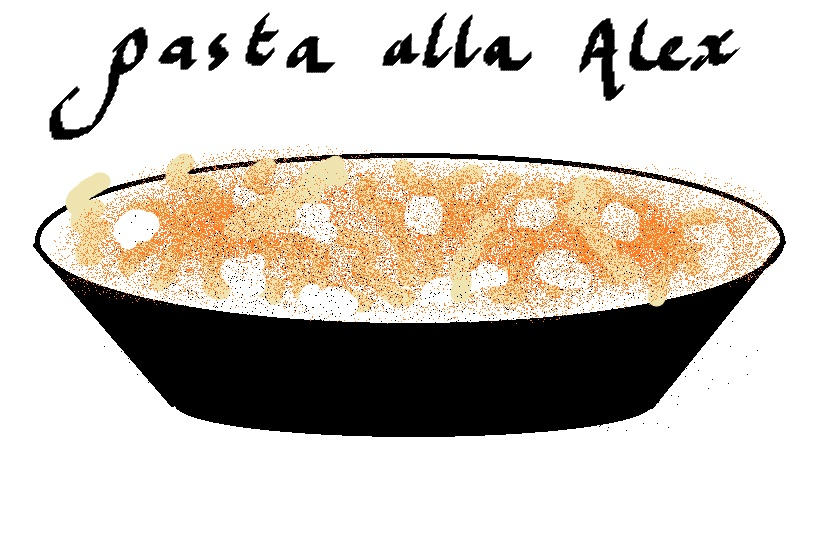

Pasta alla Alex

Description
Simple but delicious pasta meal for all my fellow broke fellas, isn't great enough to make your ex-girlfriend reconsider leaving you but might make her stay over for the night.
Ingredients
- Good quality pasta, open shape preferred
- Pesto Rosso/Pesto alla Calabrese from Barilla (we're not making the sauce from scratch; Time is money and I'm broke and lazy)
- Fresh mozzarella
- Olive Oil
- Salt and Pepper
Steps
- Boil water in a pot with a generous pinch of salt
- Put your pasta in
- Cook your pasta 1 minute short of al dente according to packet instructions
- Drain pasta, reserve a splash of cooking water and put in back in the pot
- Add a pinch of salt, a generous amount of black pepper and olive oil and your sauce of choice
- Turn the heat back on for 20s and stir
- Shred tiny bits of fresh mozzarella, add to the pot and stir once or twice
- Plate and add more tiny shreds of mozzarella on top of the plate
- Optional: Add some Parma ham/Prosciutto on top
Home